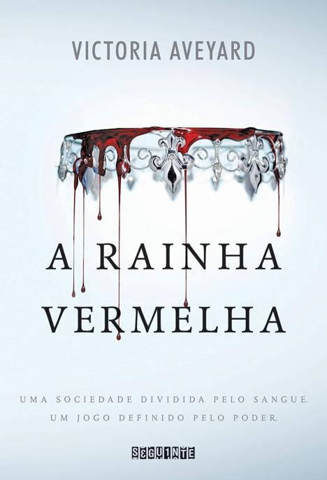
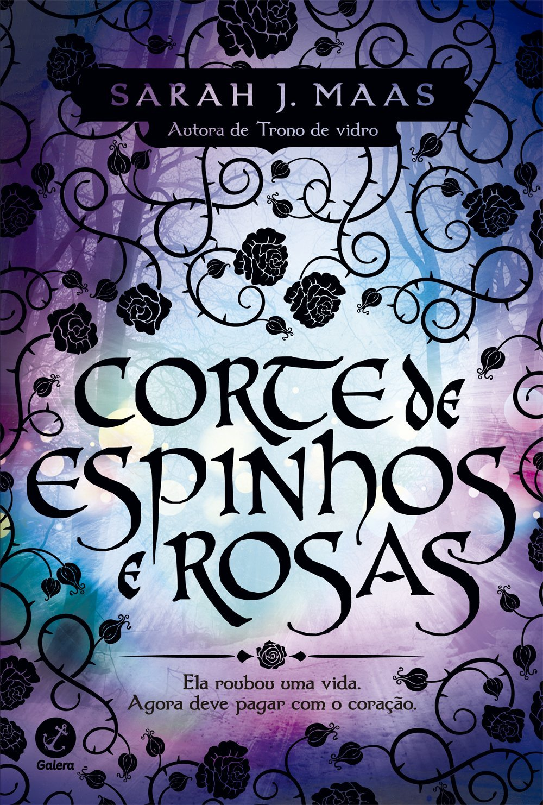
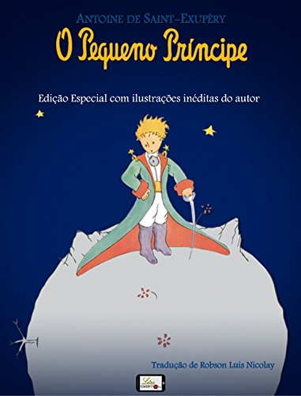

|  |
Um livro de fantasia no qual o mundo é dividido entre os que possuem sangue prateado e os de sangue vermelho. Até então, todos acreditavam que apenas os prateados possuiam poderes, mas o curso da história muda quando a protagonista vermelha Mare Barrow descobre que também os possui. |
A Rainha Vermelha/Amazon |
|  |
A mudança na vida de Feyre Archeron começa em uma das caçadas diárias nas florestas em torno de sua casa. Em um mundo onde uma muralha mágica separa feéricos e humanos, Feyre se depara com um lobo grande demais para ser normal do lado humano da muralha, e acostumada a viver com ódio e medo, não pensa duas vezes antes de acertar uma flecha na criatura. Por tal ato, ela é forçada a viver para sempre no mundo feérico e não faz ideia do que aguarda. |
Corte de Rosas e Espinhos/Amazon |
|  |
A história é narrada por um aviador que durante uma viajem cai no deserto do Saara. Na manhã seguinte a queda ele conhece o pequeno príncipe, um garotinho vindo do asteróide B-612 que nunca esquece uma pergunta. O livro fala sobre valores e nos faz refletir de uma maneira leve sobre eles e a vida. |
O Pequeno Príncipe/Amazon |